What is News Knitter?
News Knitter is a data visualization project which focuses on knitted garments as an alternative medium to visualize large scale data.
The production of knitted garments is a highly complex process which involves computer support at various steps starting with the designs of both the fabric and the shape of garments until they are ready-to-wear. In recent years, technical innovations in machine knitting have especially focused on the patterning facilities. The patterns are designed by individuals generally depending on the current trends of fashion and the intended target markets and multiplied through mass production. News Knitter translates this individual design process into a world-wide collaboration by utilizing live data streams as a base for pattern generation. Due to the dynamic nature of live data streams, the system generates patterns with unpredictable visuality.
News Knitter converts information gathered from the daily political news into clothing. Live news feed from the Internet that is broadcasted within 24 hours or a particular period is analyzed, filtered and converted into a unique visual pattern for a knitted sweater. The system consists of two different types of software: whereas one receives the content from live feeds the other converts it into visual patterns, and a fully computerized flat knitting machine produces the final output. Each product, sweater of News Knitter is an evidence/result of a specific day or period.
The exhibition consists of ten unique sweaters that are produced as sample outputs of the News Knitter project. The patterns of the sweaters are generated by using online global news of a particular day or local Turkish news of a particular time period.
Exhibitions, Presentations
September 2007, Linz, Exhibited at Ars Electronica 2007 campus2.0. See some photos from the show.
October 2007, Istanbul, Project presentation at Dort Yuz Saniye #4.
January 2008, Boston, Exhibited at Seamless Fashion Show. See photos, more photos & more photos.
March-April 2008, Amsterdam, Exhibited at ecoAesthetics organized by Tag. See photos.
May 2008, New York, Exhibited at Fashionable Technology Book Launch in Eyebeam. See photos.
June 2008, Vienna, Exhibited at Fashionable Technology Book Launch in designforumMQ. See photos.
September 2008, Torino, Exhibition and talk at C.STEM 2008 in Ex-Chiesa Metodista - via Lagrange.Photos 1, 2.
May 2009, Trbovlje, Exhibited at Speculum Artium 09.
August 2009, New Orleans, Exhibition at Siggraph 2009 in Convention Center.
August 2009, Belfast, Presentation at ISEA 2009 in University of Ulster.
December 2009, Prague, Exhibited at Wearable Information.
March-April 2010, Istanbul, Exhibited at amber Selection for Istanbul 2010 Capital of Culture.
Published in
Fashionable Technology: The Intersection of Design, Fashion, Science, and Technology
by Sabine Seymour
Publisher: Springer; 1 edition (May 19, 2008)
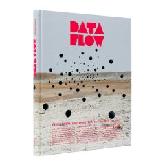
Data Flow: Visiualising Information in
Graphic Design
by R. Klanten, N. Bourquin, S. Ehmann
Publisher: Die Gestalten Verlag (September 30, 2008)
Featured on
Credits & Thanks:
Ebru Kurbak, MSc
PhD Candidate, Kunstuniversität Linz, Space & Design Strategies
ebrukurbak [at] gmail.com
Mahir M. Yavuz, MFA
PhD Candidate, Kunstuniversität Linz, Interface Cultures
mmyavuz [at] gmail.com
For global news data Google News RSS service and for local Turkish news data ntvmsnbc RSS service is used. The raw live data is gathered and analyzed by using Perl and all visualizations are made with Processing software.
The pattern finalization and knitting were actualized in TETAS Tekstil in Istanbul using Shima Seiki's computerized flat knitting machines. Many thanks to Sezgin Bingöl (TETAS, Assistant General Manager), Engin Arabaci (TETAS, Technical Services Department, Assistant Director) and Esen Yazici (TETAS, Technical Services Department, Design Training Specialist) for all their help and support.
Thanks also to Fatos Triko in Istanbul for providing the yarn and sewing the sweaters. Many thanks to Alper Ersoy for providing programming support to the news knitter software. Many thanks to Efe Mert Kaya for helping to making-of shootings and Ricardo Nascimento for being the model in our fashion shooting!
Special thanks to Prof. Dr. Arif Kurbak (Dokuz Eylül University, Faculty of Engineering, Department of Textiles Engineering) and Dr. Serap Dönmez Kretzschmar for their valuable time and advice.
Production Images

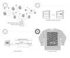

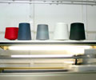

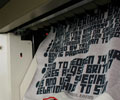

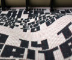

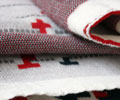

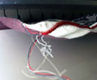

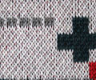

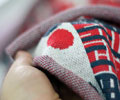

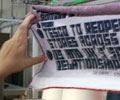

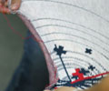
Sweaters

More Pictures

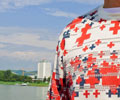


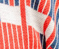

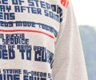

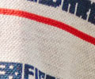

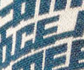

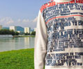


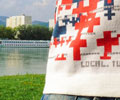

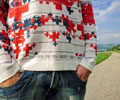

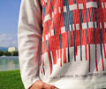